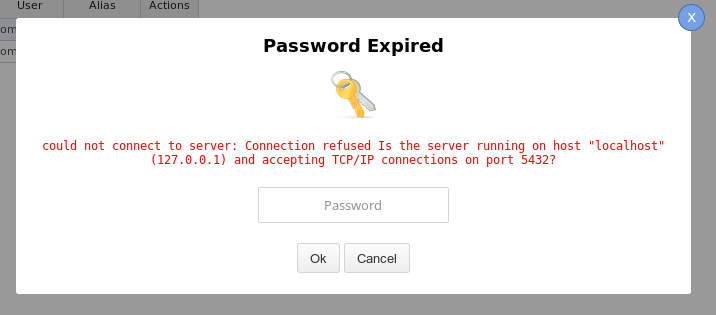
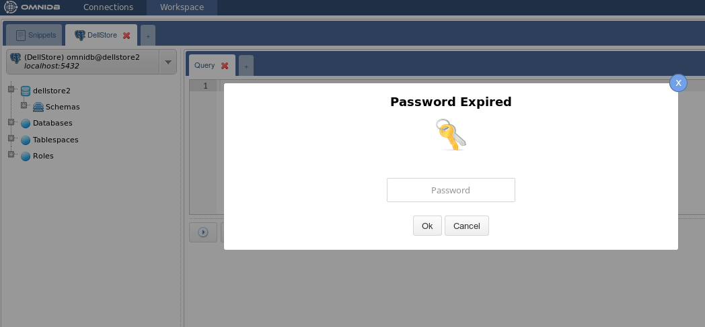
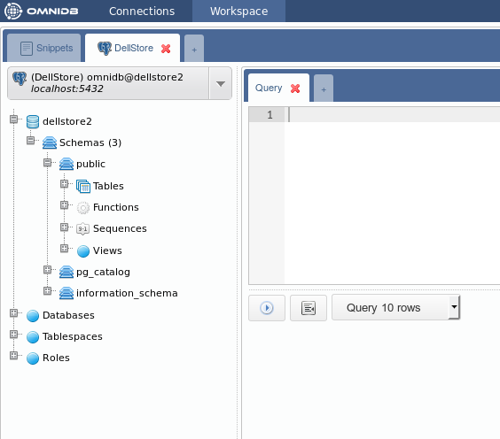
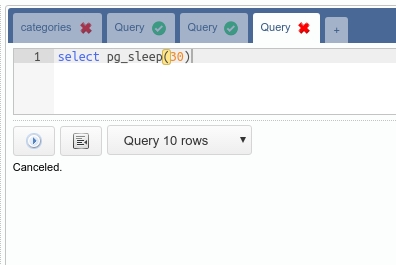
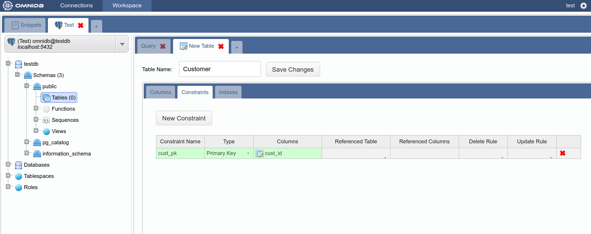
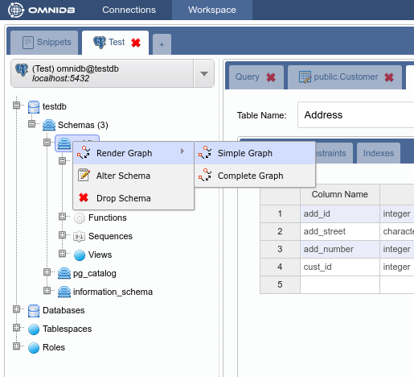
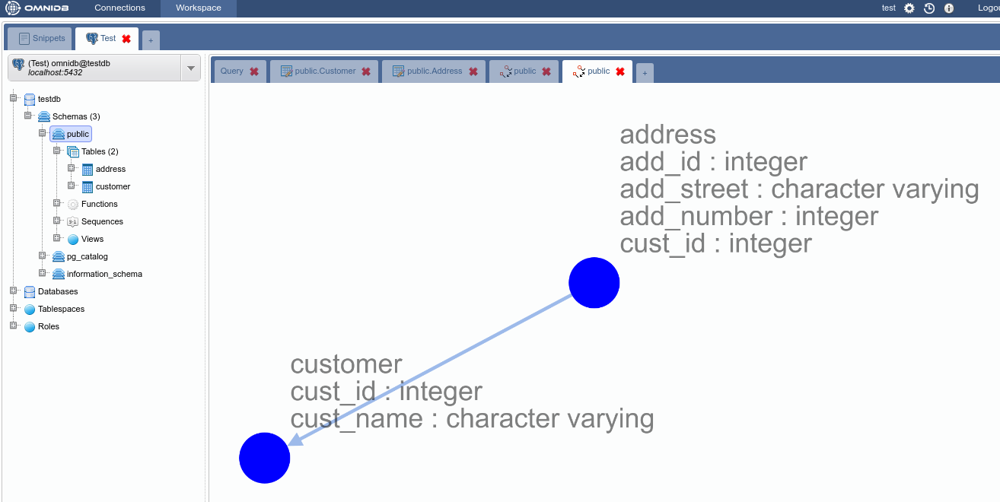

DBMS stands for database management system. It may be a simple function library or even a larger system composed by several programs and processes running separately and in parallel, whose main function is to manage one or several databases hosted in a server. It has the responsibility to manipulate and to keep the consistency of data, allowing the software developers to focus on functionalities. Thus, practically any modern system that manages data utilizes some kind of DBMS, regardless of the amount of stored information.
OmniDB’s creators, Rafael Thofehrn Castro and William Ivanski, worked in a company where they needed to deal with several different databases from customers on a daily basis. These databases were from different DBMS technologies, and so they needed to keep switching between database management tools (typically one for each DBMS). As they were not keen of the existing unified database management tools (that could manage different DBMS), they came up with OmniDB’s main idea.
OmniDB’s first version was presented as an undergrad final project in the Computer Science Course from the Federal University of Paraná, in Brazil. The objective was to trace a common line between popular DBMS, and to study deeply their metadata. The result was a tool written in ASP.NET/C# capable of connecting and identifying the main structures (tables, keys, indexes and constraints), in a generic way, from several DBMS:
OmniDB’s first version also allowed the conversion between all DBMSs supported by the tool. This feature was developed to be user friendly, requiring just a few steps: the user needs to select a source connection, the structures that will be converted (just tables and all their structures, along with their data) and the target connection.
Since early development, OmniDB was designed as an web app. Consequently, it runs in any browser, from any operational system. It can be accessed by several computers and multiple users, each one of them with his/her own group of connections. It also can be hosted in any operational system, without the need of install any dependencies. We will see further details on installation in the next chapters.
OmniDB’s main objective is to offer an unified workspace with all functionalities needed to manipulate different DMBS. DBMS specific tools aren’t required: in OmniDB, the context switch between different DBMS is done with a simple connection switch, without leaving the same page. The end-user’s sensation is that there is no difference when he/she manipulates different DBMS, it just feels like different connections.
Despite this, OmniDB is built with simplicity in mind, designed to be a fast and lightweight web application. OmniDB is also powered by the WebSocket technology, allowing the user to execute multiple queries and procedures in multiple databases in multiple hosts in background.
OmniDB is also secure. All OmniDB user data are stored encrypted, and no database password is stored at all. When the user first connects to a database, OmniDB asks for the password. This password is encrypted and stored in memory for a specific amount of time. When this time expires, OmniDB asks the password again. This ensures maximum security for the database OmniDB is connecting to.
OmniDB was rewritten to Python using the Django framework. Starting from version 2.0, OmniDB Python version will receive new features and will be actively maintained.
The source code for the ASP.NET/C# version is in the branch csharp. The next release of OmniDB C# version is 1.7, and it will only receive bug fixes.
OmniDB source code is hosted on GitHub and there are 3 main branches:
Besides being written in Python, initial version of OmniDB 2.0 contains the following main differences from the C# version:
OmniDB provides 2 kinds of packages to fit every user needs:
Both application and server can be installed on the same machine.
In order to run OmniDB app, you don't need to install any additional piece of software. Just head to omnidb.org and download the latest package for your specific operating system and architecture:
If you choose tarball or zip packages, just extract it somewhere in your computer. Get inside the folder it creates and run the omnidb-app executable. It will open OmniDB inside its own window.
With the installer you can install OmniDB in your system, and it will be available through your desktop environment application menu. When you launch it, OmniDB will open its own window.
Like OmniDB app, OmniDB server doesn't require any additional piece of software and the same options for operating system and architecture are provided.
If you choose the tarball or zip package, extract it somewhere in your computer. Get inside the uncompressed folder and run the omnidb-server executable.
user@machine:~$ cd omnidb-server
user@machine:~/omnidb-server$ ./omnidb
Starting OmniDB 2.0.2 at http://localhost:8000
Open OmniDB in your favorite browser
Press Ctrl+C to exitIf you installed OmniDB server with some installer option, you will need administrator privileges:
user@machine:~$ sudo omnidb-server
Starting OmniDB 2.0.2 at http://localhost:8000
Open OmniDB in your favorite browser
Press Ctrl+C to exitNow that the web server is running, you may access OmniDB web app on your favorite browser. Type in address bar: localhost:8000 and hit Enter. If everything went fine, you shall see a page like this:

Now you know that OmniDB is running correctly. In the next chapters, we will see how to login for the first time, how to create an user and to utilize OmniDB.
OmniDB comes only with the user admin. If you are using the server version, the first thing to do is sign in as admin, the default password is admin. You don't need to login in the app version.

The next window is the Connections window. We will talk about it later.

Click on the Users icon on the upper right corner. It will open a popup that allows the current OmniDB super user to create a new OmniDB user.

After clicking on the Users icon the tool inserts a new user called user2 (if that is the first user after admin).

You will have to change the username and password. Check if you want this new user to be a super user. This user management window is only seem by super users. When you are done, click on the Save Data button inside the popup.

You can create as many users as you want, edit existing users and also delete users by clicking on the red cross at the actions column. Now you can logout.
Let us sign in as the user we just created.

And we can see the Connections window again. Note that now there is no Users icon, because the test user is not a super user.

OmniDB C# version supported several DBMS. At the moment, OmniDB Python version, or OmniDB 2.0, supports only PostgreSQL. More DBMS support is being added as you read this.
We will now create two connections to PostgreSQL databases. To create the connections you have to click on the button New Connection and then choose the connection and fill the other fields. After filling all the fields for both connections, click on the Save Data button.

For each connection there is an Actions column where you can delete, test and select them. Go ahead and test one of the connections.

Notice the Password Expired pop-up. This is happening because OmniDB does not store the database user password on disk. When the user types a password in this popup, the password is encrypted and stored in memory.
After you type the password and hit Enter, if the connection to the database is successful you will see a confirmation pop-up.

But, if you have trouble of any kind connecting to your PostgreSQL database, the Password Expired popup will remain showing the error OmniDB got.

Also, in the connections grid, if you click on the Select Connection action, OmniDB will open it in the Workspace Window.
After creating at least one connection the user can enter the Workspace, either by clicking the Workspace tab or by clicking in the Select Connection action in the connections grid.

This interface has several elements:
So, the outer table named Test has this name because of the alias we put in the connection to the testdb. This tab is a Connection Outer Tab. Notice the little tab with a cross besides the Test outer tab. This allows you to create a new outer tab that will automatically be a Connection Outer Tab. However, the Snippet Outer Tab is fixed and will always be the first.
A new Connection Outer Tab will always automatically point to the first connection on your list of database connections. Or, if you clicked on the Select Connection action, it will point to the selected connection. Observe the elements inside of this tab:

Alt-Q), will show a grid with the query results. All modes will show error messages, if any.Take a look at your connections selector. OmniDB always points to the first available connection but you can change it by clicking on the selector.
Select the DellStore connection. Now go to the tree right below the selector and click to expand the node Schemas.

Bear in mind that every 10 minutes you keep without performing actions on the database, will trigger a Password Expired popup. As explained before, this is important for your database security. After you type the correct password, you will see all schemas in your database (in case of PostgreSQL, TOAST and temp schemas are not shown).

Now click to expand the schema public. You will see different kinds of elements contained in this schema.

Now click to expand the node Tables, and you will see all tables contained in the schema public. Expand any table and you will see its columns, primary key, foreign keys, unique constraints and indexes. Each column is also expansible, displaying data type and nullable constraint.

In order to view records inside a table, right click it and choose Data Actions > Query Data.

Notice that OmniDB fills the current SQL editor with a simple query to list table records. The records are displayed in a grid right below the editor. This grid can be controlled with keyboard as if you were using a spreadsheet manager. You can also copy data from single cells or block of cells (that can be selected with the keyboard or mouse) and paste on any spreadsheet manager.

You can edit the query on the SQL editor, writing simple or more complex queries and clicking on the action button. You can control how many records should be displayed (10, 100, 1000 or all rows). More details in the next chapters.
Inside a single connection, you can create several inner tabs by clicking on the last little tab with a cross. Each new inner tab will be a Query Tab.

On OmniDB, you can execute several SQL statements and procedures in parallel. When it is executing, an icon will be shown in the tab to indicate its current state. If some process is finished and it is not in the current tab, that tab will show a green icon indicating the routine being executed there is now finished.

By clicking in the Cancel button, you can cancel a process running inside the database.

You can also drag and drop a tab to change its order. This works with both inner and outer tabs.
Additionally, you can use keyboard shortcuts to manage inner tabs (SQL Query) and outer tabs (Connection):
OmniDB has a table creation interface that lets you configure columns, constraints and indexes. A couple of observations should be mentioned:
We will create example tables (Customer and Address) in the testdb database we connected to earlier. Right click on the Tables node and select the New Table action:

We will create the table Customer with a primary key that will be referenced by the table Address:

Note how the table appers in the Tables tree node:

Now create the table Address with a primary key and a foreign key:

At this point we have two tables in schema public. The schema structure can be seen with the graph feature by right clicking on the schema public node of the tree and selecting Render Graph > Simple Graph:


And this is what the Complete Graph looks like:

OmniDB also lets you edit existing tables (always following DBMS limitations). To test this feature we will add a new column to the table Customer. To access the alter table interface just right click the table node and select the action Table Actions > Alter Table:

Add the column cust_age and save:
The interface is capable of detecting errors that may occur during alter table operations, showing the command and the error that occurred. To demonstrate it we will try to add the column cust_name, which already belongs to this table:

In order to remove a table just right click the table node and select the action Table Actions > Drop Table: